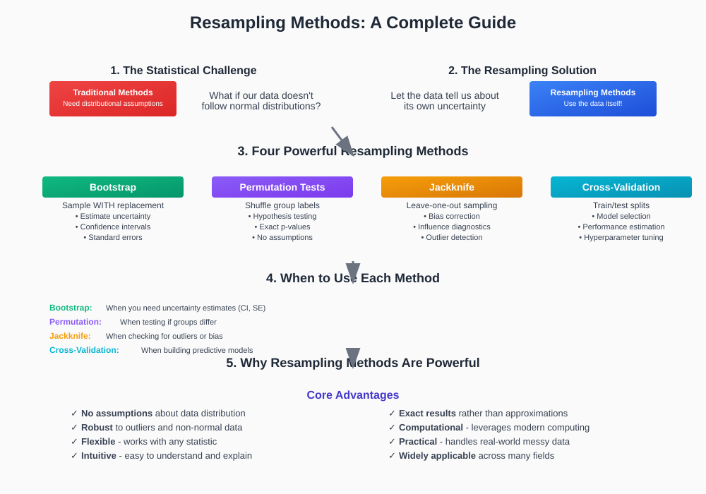
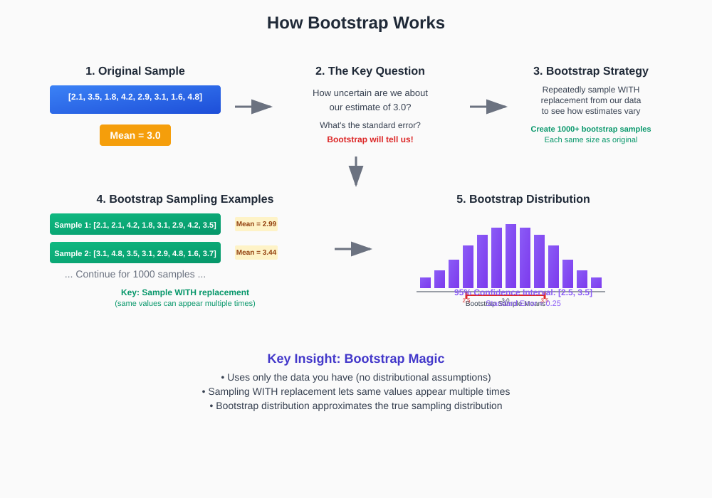
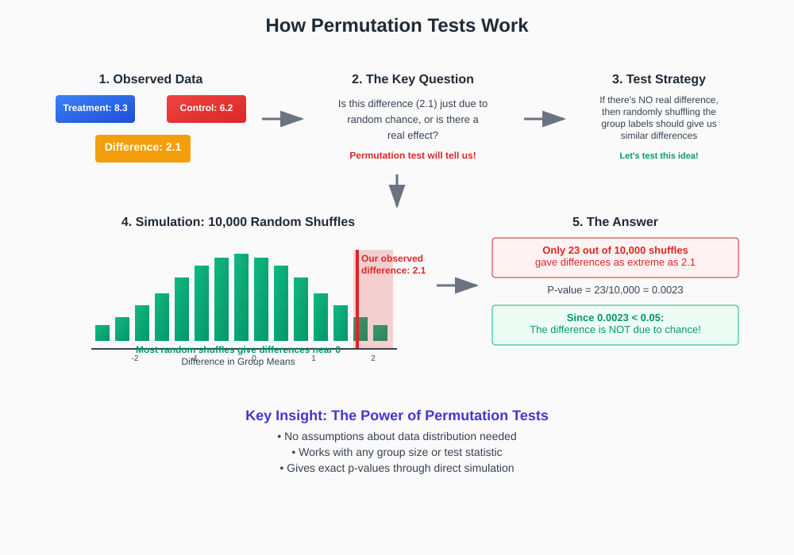
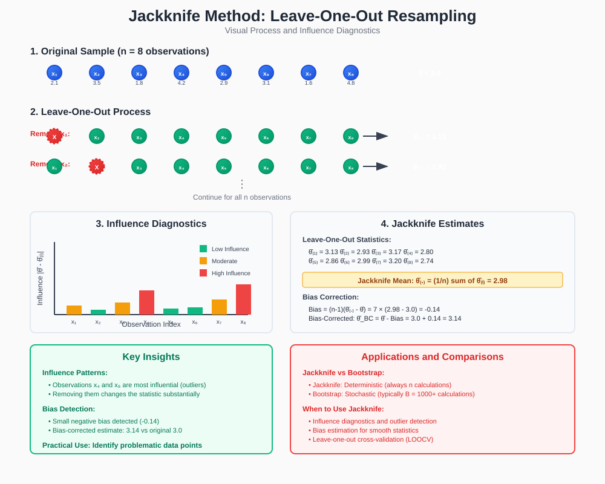
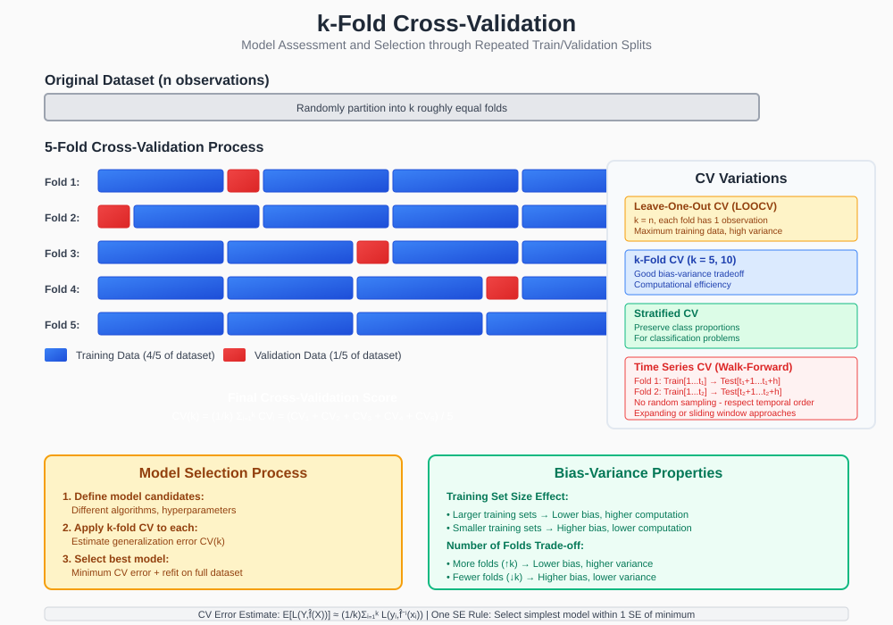

Resampling & Advanced Inference
Quick Navigation
- Overview & Motivation
- Bootstrap Methods
- Permutation Tests
- Jackknife Techniques
- Cross-Validation Foundations
- Practical Implementation
- Model Selection & Validation
- Advanced Applications
- References & Further Reading
Overview & Motivation

Resampling methods are computational techniques that use sample data to make inferences about population parameters without relying on traditional distributional assumptions. These methods are particularly valuable when:
- Traditional assumptions are violated: When normality or other distributional assumptions don't hold
- Complex statistics: When the sampling distribution of a statistic is unknown or difficult to derive
- Small sample sizes: When asymptotic approximations may not be reliable
- Non-parametric inference: When we want to avoid parametric assumptions entirely
Core Philosophy:
"The sample contains information about the population from which it was drawn"
Key Advantages:
- Distribution-free: No need to assume specific population distributions
- Robust: Less sensitive to outliers and violations of assumptions
- Flexible: Can be applied to virtually any statistic
- Intuitive: Easy to understand and explain to non-statisticians
Fundamental Principle:
The empirical distribution function (EDF) serves as an estimate of the true population distribution:
F̂ₙ(x) = (1/n) ∑ᵢ₌₁ⁿ I(Xᵢ ≤ x)
Where:
- F̂ₙ(x) = empirical distribution function
- n = sample size
- I(·) = indicator function
- Xᵢ = observed data points
Bootstrap Methods

Bootstrap is a resampling method that estimates the sampling distribution of a statistic by resampling with replacement from the original sample.
Theoretical Foundation
Bootstrap Principle:
The bootstrap approximates the unknown distribution F with the empirical distribution F̂ₙ:
θ̂* = T(X₁*, X₂*, ..., Xₙ*)
Where:
- θ̂* = bootstrap estimate of parameter θ
- T(·) = statistic function
- X₁, X₂, ..., Xₙ* = bootstrap sample (drawn with replacement)
Bootstrap Algorithm
Step 1: Original Sample
- Start with original sample: x₁, x₂, ..., xₙ
- Calculate original statistic: θ̂ = T(x₁, x₂, ..., xₙ)
Step 2: Bootstrap Resampling
- Draw B bootstrap samples with replacement
- Each bootstrap sample has size n
- Calculate statistic for each bootstrap sample
Step 3: Bootstrap Distribution
- Collect B bootstrap statistics: θ̂₁, θ̂₂, ..., θ̂ᵦ*
- Use this collection as approximation to sampling distribution
Types of Bootstrap
Non-parametric Bootstrap:
- Resample directly from observed data
- No distributional assumptions
- Most common approach
Parametric Bootstrap:
- Fit parametric model to data
- Generate new samples from fitted model
- Useful when strong distributional knowledge exists
Smooth Bootstrap:
- Add noise to resampled observations
- Helps with discrete data
- Reduces discreteness artifacts
Bootstrap Confidence Intervals
Percentile Method:
CI₁₋α = [θ̂*(α/2), θ̂*(1-α/2)]
Bias-Corrected and Accelerated (BCₐ):
CI₁₋α = [θ̂*(α₁), θ̂*(α₂)]
Where α₁ and α₂ are adjusted percentiles accounting for bias and skewness.
Bootstrap-t Method:
tᵢ* = (θ̂ᵢ* - θ̂) / ŝₑᵢ*
Where ŝₑᵢ* is the bootstrap estimate of standard error.
Practical Considerations
Number of Bootstrap Samples:
- B = 1000: Sufficient for standard error estimation
- B = 2000-5000: Better for confidence intervals
- B = 10000+: Required for extreme percentiles
When Bootstrap Fails:
- Extreme order statistics: Maximum, minimum values
- Heavy-tailed distributions: Infinite variance cases
- Dependent data: Without proper modifications
Permutation Tests

Permutation tests (also called randomization tests) assess statistical significance by examining all possible rearrangements of the data under the null hypothesis.
Theoretical Basis
Null Hypothesis of Exchangeability:
Under H₀, observations are exchangeable, meaning all permutations of the data are equally likely.
Test Statistic Distribution:
Under H₀, the test statistic T has the same distribution for any permutation of the data:
P(T ≥ t | H₀) = (Number of permutations with T ≥ t) / (Total number of permutations)
Permutation Test Algorithm
Step 1: Calculate Observed Statistic
- Compute test statistic T₀ from original data
- Example: difference in means, correlation coefficient
Step 2: Generate Permutation Distribution
- Create all possible permutations (or random subset)
- Calculate test statistic for each permutation
- Collect permutation statistics: T₁, T₂, ..., Tₘ
Step 3: Calculate p-value
p-value = (Number of |Tᵢ| ≥ |T₀|) / M
Where M is the total number of permutations considered.
Types of Permutation Tests
Two-Sample Tests:
- Independent samples: Permute group labels
- Paired samples: Permute signs of differences
- Example: Testing difference in means between treatment groups
Correlation Tests:
- Null hypothesis: ρ = 0
- Procedure: Permute one variable, keep other fixed
- Statistic: Pearson or Spearman correlation
Regression Tests:
- Testing significance of predictors
- Permute response variable
- **Calculate F-statistic or R² for each permutation
Advantages of Permutation Tests
Exact Control of Type I Error:
- Actual significance level equals nominal level
- No distributional assumptions required
- Valid for any sample size
Flexibility:
- Can be applied to any test statistic
- Handles complex experimental designs
- Robust to outliers and non-normality
Intuitive Interpretation:
- Clear connection between p-value and data
- Easy to explain to non-statisticians
Computational Considerations
Complete Enumeration vs. Random Sampling:
- Complete: When total permutations manageable (< 10⁶)
- Random sampling: When complete enumeration infeasible
- Monte Carlo permutation tests: Use random subset of permutations
Efficiency Tips:
- Early stopping: Stop when enough extreme values found
- Symmetry: Exploit symmetries to reduce computations
- Parallel processing: Embarrassingly parallel problem
Jackknife Techniques

Jackknife is a resampling technique that systematically leaves out each observation to assess the influence of individual data points and estimate bias and variance.
Jackknife Procedure
Leave-One-Out Principle:
For sample x₁, x₂, ..., xₙ, create n jackknife samples:
- Sample 1: x₂, x₃, ..., xₙ (omit x₁)
- Sample 2: x₁, x₃, ..., xₙ (omit x₂)
- ...
- Sample n: x₁, x₂, ..., xₙ₋₁ (omit xₙ)
Jackknife Statistics:
θ̂₍ᵢ₎ = T(x₁, ..., xᵢ₋₁, xᵢ₊₁, ..., xₙ)
Where θ̂₍ᵢ₎ is the statistic calculated omitting the i-th observation.
Bias Estimation
Jackknife Bias Estimate:
Bias_jack = (n-1)(θ̄₍.₎ - θ̂)
Where:
- θ̄₍.₎ = (1/n) ∑ᵢ₌₁ⁿ θ̂₍ᵢ₎ = average of jackknife statistics
- θ̂ = statistic from full sample
Bias-Corrected Estimate:
θ̂_BC = θ̂ - Bias_jack = nθ̂ - (n-1)θ̄₍.₎
Variance Estimation
Jackknife Variance:
Var_jack(θ̂) = (n-1)/n ∑ᵢ₌₁ⁿ (θ̂₍ᵢ₎ - θ̄₍.₎)²
Standard Error:
SE_jack(θ̂) = √Var_jack(θ̂)
Jackknife vs. Bootstrap
Computational Efficiency:
- Jackknife: Always requires exactly n calculations
- Bootstrap: Requires B calculations (typically B ≫ n)
Accuracy:
- Jackknife: Good for bias, adequate for variance
- Bootstrap: Generally more accurate for both
Applicability:
- Jackknife: Works well for smooth statistics
- Bootstrap: More robust for non-smooth statistics
Applications
Influence Diagnostics:
- Identify influential observations
- Assess stability of estimates
- Detect outliers or leverage points
Model Selection:
- Leave-one-out cross-validation
- AIC and BIC approximations
- Variable selection criteria
Robust Statistics:
- Bias correction for complex estimators
- Variance estimation for M-estimators
- Diagnostics for robust procedures
Cross-Validation Foundations

Cross-validation is a resampling technique primarily used for model assessment and selection by partitioning data into training and validation sets.
Core Concepts
Prediction Error Decomposition:
E[L(Y, f̂(X))] = Bias² + Variance + Irreducible Error
Where:
- L(Y, f̂(X)) = loss function
- Bias² = squared bias of the model
- Variance = variance of the model
- Irreducible Error = noise in the relationship
Cross-Validation Estimate:
CV(k) = (1/n) ∑ᵢ₌₁ⁿ L(yᵢ, f̂⁻ᵏ⁽ⁱ⁾(xᵢ))
Where f̂⁻ᵏ⁽ⁱ⁾ is the model trained without the k-th fold containing observation i.
Types of Cross-Validation
k-Fold Cross-Validation:
- Procedure: Divide data into k roughly equal folds
- Process: Train on k-1 folds, validate on remaining fold
- Repeat: k times, average the results
- Common choices: k = 5, 10
Leave-One-Out Cross-Validation (LOOCV):
- Special case: k = n (each fold contains one observation)
- Advantage: Uses maximum data for training
- Disadvantage: High computational cost, high variance
Stratified Cross-Validation:
- Purpose: Maintain class proportions in each fold
- Application: Classification problems with imbalanced classes
- Benefit: More representative validation sets
Time Series Cross-Validation:
- Forward chaining: Respect temporal order
- No random sampling: Use chronological splits
- Applications: Financial data, forecasting problems
Mathematical Properties
LOOCV for Linear Models:
For linear regression with hat matrix H:
CV = (1/n) ∑ᵢ₌₁ⁿ ((yᵢ - ŷᵢ)/(1 - hᵢᵢ))²
Where hᵢᵢ are diagonal elements of H = X(X'X)⁻¹X'.
Generalized Cross-Validation (GCV):
GCV = (1/n) ∑ᵢ₌₁ⁿ ((yᵢ - ŷᵢ)/(1 - tr(H)/n))²
More stable than LOOCV for model selection.
Bias-Variance Trade-off in CV
Training Set Size Effect:
- Larger training sets: Lower bias, higher computational cost
- Smaller training sets: Higher bias, lower computational cost
Number of Folds Trade-off:
- More folds (higher k): Lower bias, higher variance
- Fewer folds (lower k): Higher bias, lower variance
Optimal Choice:
k = 5 or k = 10 often provide good bias-variance balance.
Cross-Validation for Model Selection
Procedure:
- Define model space: Different algorithms or hyperparameters
- Apply CV to each model: Estimate prediction error
- Select best model: Minimum CV error
- Refit on full data: Final model using all available data
One Standard Error Rule:
Choose simplest model within one standard error of the minimum CV error:
Model* = argmin{complexity} such that CV(model) ≤ CV_min + SE(CV_min)
Nested Cross-Validation
Purpose: Unbiased estimate of model performance when hyperparameters are selected via CV.
Procedure:
- Outer loop: k-fold CV for performance estimation
- Inner loop: Cross-validation for hyperparameter selection
- Result: Honest estimate of generalization error
Practical Implementation
Bootstrap Implementation
Basic Bootstrap for Mean:
import numpy as np
from scipy import stats
def bootstrap_mean(data, n_bootstrap=1000):
"""Bootstrap estimation of mean and confidence interval."""
n = len(data)
bootstrap_means = []
for _ in range(n_bootstrap):
# Resample with replacement
bootstrap_sample = np.random.choice(data, size=n, replace=True)
bootstrap_means.append(np.mean(bootstrap_sample))
return np.array(bootstrap_means)
# Calculate confidence interval
def bootstrap_ci(bootstrap_stats, confidence=0.95):
"""Calculate percentile confidence interval."""
alpha = 1 - confidence
lower = np.percentile(bootstrap_stats, 100 * alpha/2)
upper = np.percentile(bootstrap_stats, 100 * (1 - alpha/2))
return lower, upper
Bootstrap for Correlation:
def bootstrap_correlation(x, y, n_bootstrap=1000):
"""Bootstrap correlation coefficient."""
n = len(x)
bootstrap_corrs = []
for _ in range(n_bootstrap):
# Resample pairs together
indices = np.random.choice(n, size=n, replace=True)
x_boot = x[indices]
y_boot = y[indices]
bootstrap_corrs.append(np.corrcoef(x_boot, y_boot)[0,1])
return np.array(bootstrap_corrs)
Permutation Test Implementation
Two-Sample Permutation Test:
def permutation_test(group1, group2, n_permutations=10000):
"""Two-sample permutation test for difference in means."""
# Observed difference
observed_diff = np.mean(group1) - np.mean(group2)
# Combined data
combined = np.concatenate([group1, group2])
n1, n2 = len(group1), len(group2)
# Permutation distribution
perm_diffs = []
for _ in range(n_permutations):
# Randomly permute combined data
permuted = np.random.permutation(combined)
perm_group1 = permuted[:n1]
perm_group2 = permuted[n1:]
perm_diffs.append(np.mean(perm_group1) - np.mean(perm_group2))
# Calculate p-value
p_value = np.mean(np.abs(perm_diffs) >= np.abs(observed_diff))
return p_value, np.array(perm_diffs)
Jackknife Implementation
Jackknife Standard Error:
def jackknife_se(data, statistic_func):
"""Calculate jackknife standard error for any statistic."""
n = len(data)
jackknife_stats = []
# Calculate leave-one-out statistics
for i in range(n):
jackknife_sample = np.delete(data, i)
jackknife_stats.append(statistic_func(jackknife_sample))
jackknife_stats = np.array(jackknife_stats)
# Jackknife variance
variance = (n-1) * np.var(jackknife_stats, ddof=0)
return np.sqrt(variance)
# Example usage
def median_func(x):
return np.median(x)
# Calculate jackknife SE for median
data = np.random.normal(0, 1, 100)
se_median = jackknife_se(data, median_func)
Cross-Validation Implementation
k-Fold Cross-Validation:
from sklearn.model_selection import cross_val_score, KFold
from sklearn.linear_model import LinearRegression
from sklearn.metrics import mean_squared_error
def cross_validate_model(X, y, model, k=5):
"""Perform k-fold cross-validation."""
kf = KFold(n_splits=k, shuffle=True, random_state=42)
scores = cross_val_score(model, X, y, cv=kf,
scoring='neg_mean_squared_error')
return -scores # Convert back to positive MSE
# Custom implementation
def manual_cv(X, y, k=5):
"""Manual k-fold cross-validation implementation."""
n = len(X)
fold_size = n // k
cv_errors = []
for i in range(k):
# Define validation fold
start_idx = i * fold_size
end_idx = (i + 1) * fold_size if i < k-1 else n
# Split data
X_val = X[start_idx:end_idx]
y_val = y[start_idx:end_idx]
X_train = np.concatenate([X[:start_idx], X[end_idx:]])
y_train = np.concatenate([y[:start_idx], y[end_idx:]])
# Fit model and predict
model = LinearRegression()
model.fit(X_train, y_train)
y_pred = model.predict(X_val)
# Calculate error
cv_errors.append(mean_squared_error(y_val, y_pred))
return np.array(cv_errors)
Model Selection & Validation
Information Criteria and Cross-Validation
Relationship Between AIC and Leave-One-Out CV:
For linear regression with Gaussian errors:
AIC ≈ n log(RSS/n) + 2p
LOOCV ≈ RSS × (n/(n-p))²
Where RSS is residual sum of squares and p is number of parameters.
Cross-Validation for Hyperparameter Tuning:
from sklearn.model_selection import GridSearchCV
from sklearn.ensemble import RandomForestRegressor
def tune_hyperparameters(X, y):
"""Grid search with cross-validation."""
param_grid = {
'n_estimators': [50, 100, 200],
'max_depth': [5, 10, 15, None],
'min_samples_split': [2, 5, 10]
}
rf = RandomForestRegressor(random_state=42)
grid_search = GridSearchCV(rf, param_grid, cv=5,
scoring='neg_mean_squared_error')
grid_search.fit(X, y)
return grid_search.best_params_, grid_search.best_score_
Bootstrap Model Selection
Bootstrap Model Averaging:
def bootstrap_model_selection(X, y, models, n_bootstrap=1000):
"""Select best model using bootstrap resampling."""
model_scores = {name: [] for name in models.keys()}
for _ in range(n_bootstrap):
# Bootstrap sample
indices = np.random.choice(len(X), size=len(X), replace=True)
X_boot = X[indices]
y_boot = y[indices]
# Out-of-bag indices for validation
oob_indices = np.setdiff1d(np.arange(len(X)), indices)
if len(oob_indices) == 0:
continue
X_oob = X[oob_indices]
y_oob = y[oob_indices]
# Evaluate each model
for name, model in models.items():
model.fit(X_boot, y_boot)
y_pred = model.predict(X_oob)
score = mean_squared_error(y_oob, y_pred)
model_scores[name].append(score)
# Average scores
avg_scores = {name: np.mean(scores)
for name, scores in model_scores.items()}
return avg_scores
Validation Set Approach
Simple Train-Validation-Test Split:
from sklearn.model_selection import train_test_split
def train_validate_test_split(X, y, test_size=0.2, val_size=0.2):
"""Three-way split for model development."""
# First split: separate test set
X_temp, X_test, y_temp, y_test = train_test_split(
X, y, test_size=test_size, random_state=42)
# Second split: training and validation
val_size_adjusted = val_size / (1 - test_size)
X_train, X_val, y_train, y_val = train_test_split(
X_temp, y_temp, test_size=val_size_adjusted, random_state=42)
return X_train, X_val, X_test, y_train, y_val, y_test
Advanced Applications
Bootstrap Hypothesis Testing
Bootstrap-t Test:
def bootstrap_t_test(sample1, sample2, n_bootstrap=1000):
"""Bootstrap-t test for difference in means."""
# Observed difference and pooled standard error
diff_obs = np.mean(sample1) - np.mean(sample2)
se_obs = np.sqrt(np.var(sample1)/len(sample1) +
np.var(sample2)/len(sample2))
t_obs = diff_obs / se_obs
# Bootstrap under null (equal means)
combined_mean = np.mean(np.concatenate([sample1, sample2]))
sample1_centered = sample1 - np.mean(sample1) + combined_mean
sample2_centered = sample2 - np.mean(sample2) + combined_mean
bootstrap_t_stats = []
for _ in range(n_bootstrap):
# Bootstrap samples under null
boot1 = np.random.choice(sample1_centered, len(sample1), replace=True)
boot2 = np.random.choice(sample2_centered, len(sample2), replace=True)
# Bootstrap t-statistic
diff_boot = np.mean(boot1) - np.mean(boot2)
se_boot = np.sqrt(np.var(boot1)/len(boot1) +
np.var(boot2)/len(boot2))
t_boot = diff_boot / se_boot
bootstrap_t_stats.append(t_boot)
# P-value
p_value = np.mean(np.abs(bootstrap_t_stats) >= np.abs(t_obs))
return p_value, np.array(bootstrap_t_stats)
Permutation-Based Feature Selection
Permutation Importance:
def permutation_importance(model, X, y, n_permutations=100):
"""Calculate permutation importance for features."""
# Baseline score
baseline_score = model.score(X, y)
importances = {}
for feature_idx in range(X.shape[1]):
scores = []
for _ in range(n_permutations):
# Permute one feature
X_permuted = X.copy()
X_permuted[:, feature_idx] = np.random.permutation(
X_permuted[:, feature_idx])
# Score with permuted feature
permuted_score = model.score(X_permuted, y)
scores.append(baseline_score - permuted_score)
importances[f'feature_{feature_idx}'] = {
'importance': np.mean(scores),
'std': np.std(scores)
}
return importances
Time Series Cross-Validation
Walk-Forward Validation:
def time_series_cv(X, y, n_splits=5, gap=0):
"""Time series cross-validation with walk-forward approach."""
n = len(X)
test_size = n // (n_splits + 1)
for i in range(n_splits):
# Training data: from start to split point
train_end = (i + 1) * test_size - gap
train_indices = np.arange(0, train_end)
# Test data: next chunk
test_start = train_end + gap
test_end = test_start + test_size
test_indices = np.arange(test_start, min(test_end, n))
if len(test_indices) == 0:
break
yield train_indices, test_indices
Bayesian Bootstrap
Bayesian Bootstrap Implementation:
def bayesian_bootstrap(data, n_bootstrap=1000):
"""Bayesian bootstrap using Dirichlet weights."""
n = len(data)
bootstrap_stats = []
for _ in range(n_bootstrap):
# Generate Dirichlet weights
weights = np.random.exponential(1, n)
weights = weights / np.sum(weights)
# Weighted statistic
weighted_mean = np.sum(weights * data)
bootstrap_stats.append(weighted_mean)
return np.array(bootstrap_stats)
References & Further Reading
Essential Papers
- Efron, B. (1979). "Bootstrap Methods: Another Look at the Jackknife." Annals of Statistics, 7(1), 1-26.
- Efron, B. & Tibshirani, R. (1997). "Improvements on Cross-Validation: The .632+ Bootstrap Method." Journal of the American Statistical Association, 92(438), 548-560.
- Good, P. (2005). Permutation, Parametric and Bootstrap Tests of Hypotheses. Springer.
- Davison, A. C. & Hinkley, D. V. (1997). Bootstrap Methods and Their Applications. Cambridge University Press.
Modern Applications
- Hastie, T., Tibshirani, R., & Friedman, J. (2009). The Elements of Statistical Learning. Springer.
- James, G., Witten, D., Hastie, T., & Tibshirani, R. (2013). An Introduction to Statistical Learning. Springer.
- Breiman, L. (2001). "Random Forests." Machine Learning, 45(1), 5-32.
- Stone, M. (1974). "Cross-Validatory Choice and Assessment of Statistical Predictions." Journal of the Royal Statistical Society, 36(2), 111-147.
Online Resources
- Google Colab Notebooks: Bootstrap & Resampling Examples

- Scikit-learn Documentation: Cross-validation and model selection
- Bootstrap Methods Course: MIT OpenCourseWare
- ArXiv Papers: Recent advances in resampling methods
Practical Guides
- R Bootstrap Package:
bootpackage documentation - Python Implementation:
scipy.stats.bootstrapandsklearn.model_selection - Statistical Software: SAS, SPSS, and R implementations
- Real-world Case Studies: Applications in finance, biology, and machine learning